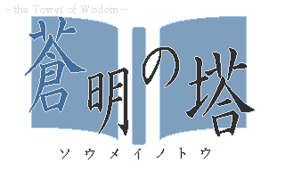

ゴラクタ
Games
History
Twitter
niconico
明赤の塔 ver0.21を配信中です。
専用ページはコチラ
Games

蒼明の塔
一本道ローグライク一作目。
対応:Win
専用ページヘ
DL
窓の杜ライブラリ
Vector
ふりーむ！
明赤の塔
一本道ローグライク二作目。
対応:Win
専用ページヘ
DL
窓の杜ライブラリ
Google Drive
更新履歴
2015/00/00 またしてもサイトをリニューアル。 2015/07/19 トップページの文面を変更しました。 2015/06/29 明赤の塔 ver.0.21を公開しました。 2015/05/26 明赤の塔 ver.0.20を公開しました。 2015/05/22 明赤の塔 ver.0.11を公開しました。 2015/05/08 明赤の塔 ver.0.10を公開してました。 2015/03/19 明赤の塔 ver.γを公開しました。 2015/03/05 明赤の塔 ver.βを公開してました。 2015/02/15 明赤の塔 ver.αを公開しました。 2014/11/30 サイトを移転しました。ついでにタイトルも変更しました。さらにリンク集に素材サイト様を追加しました。 2014/06/29 蒼明の塔 ver1.01に更新。 2014/06/16 サイトをリニューアル。 2013/01/04 蒼明の塔 ver1.00配信中。 2013/12/13 蒼明の塔 ver0.71配信中。 2013/12/13 蒼明の塔 ver0.70配信中。 2013/12/06 蒼明の塔 ver0.60配信中。 2013/11/28 蒼明の塔 ver0.50配信中。 2013/03/31 Sky'sTowerをver.β#+1に更新。 2013/03/27 Sky'sTowerをver.β#に更新。 2013/03/25 Sky'sTowerを追加。 自作ゲームからどうぞ。 2013/03/19 ブログを追加。 2012/11/26 Ricordo凍結。すいません。 2012/03/04 Ricordo ver0.10配布開始。 自作ゲーム置き場解禁。 2011/11/14 サイトをリニューアル。